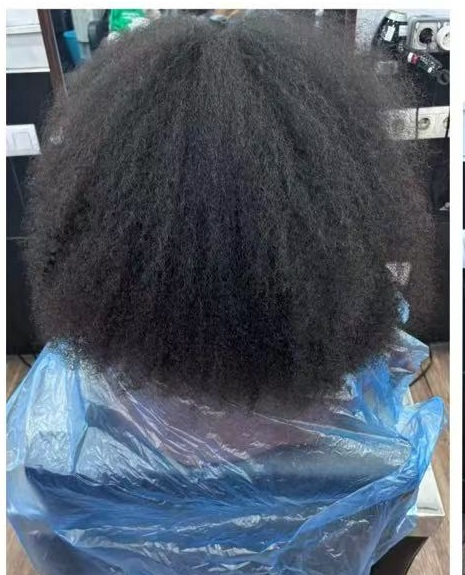
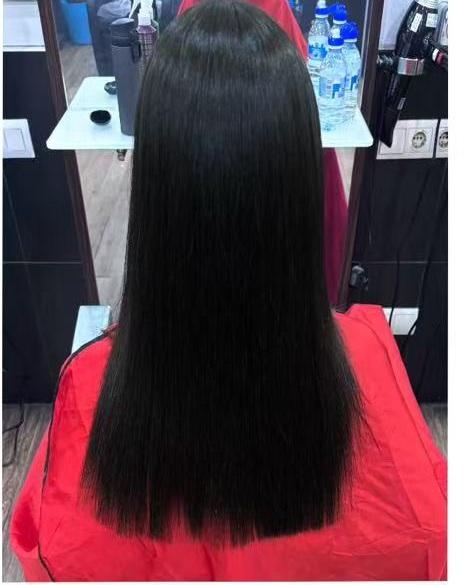

KISNA
EXPERTO EN ALISADO
Volver al inicio
Resultados reales
Galería KISNA


ANTES
DESPUÉS
↔
Alisado Japonés
Cabello afro / muy rizado
02
Próximamente
Nueva transformación real.
03
Próximamente
Nueva transformación real.
04
Próximamente
Nueva transformación real.